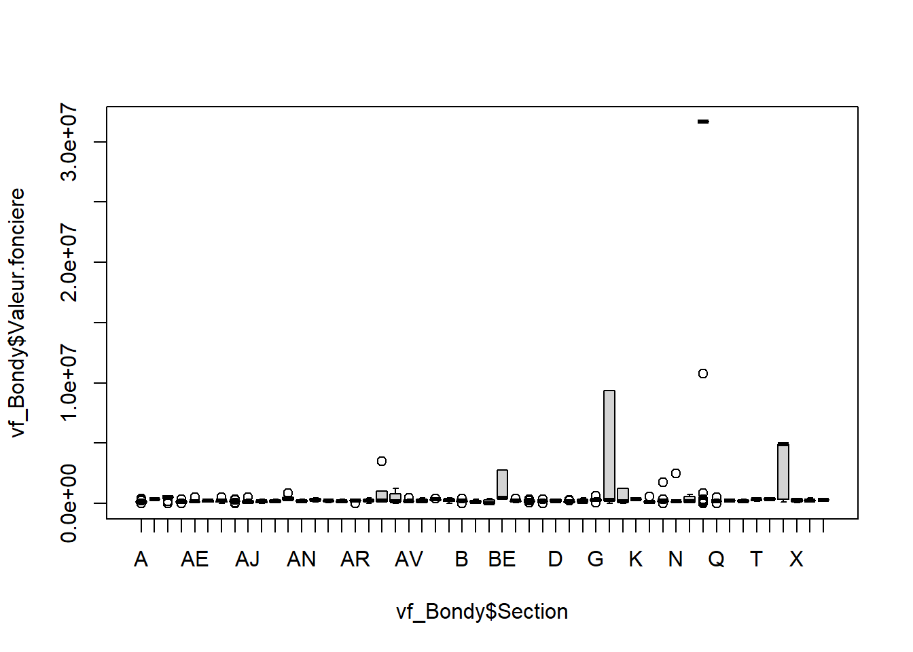
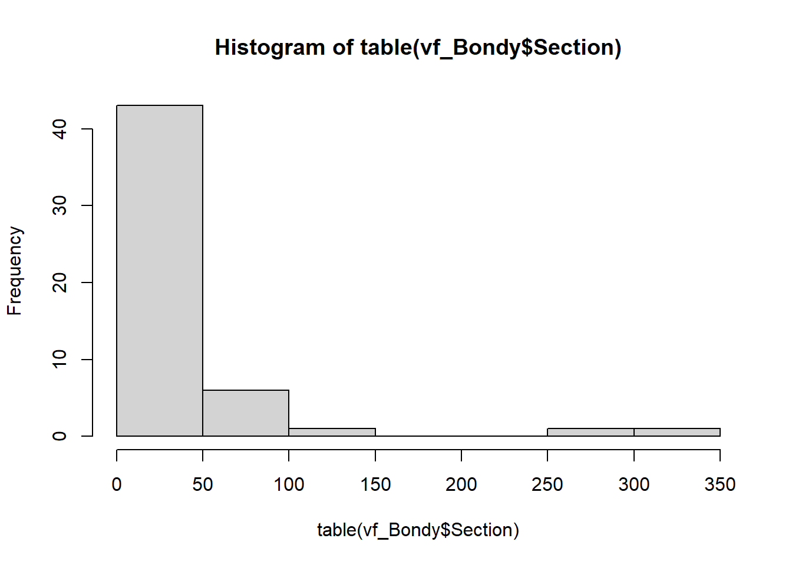
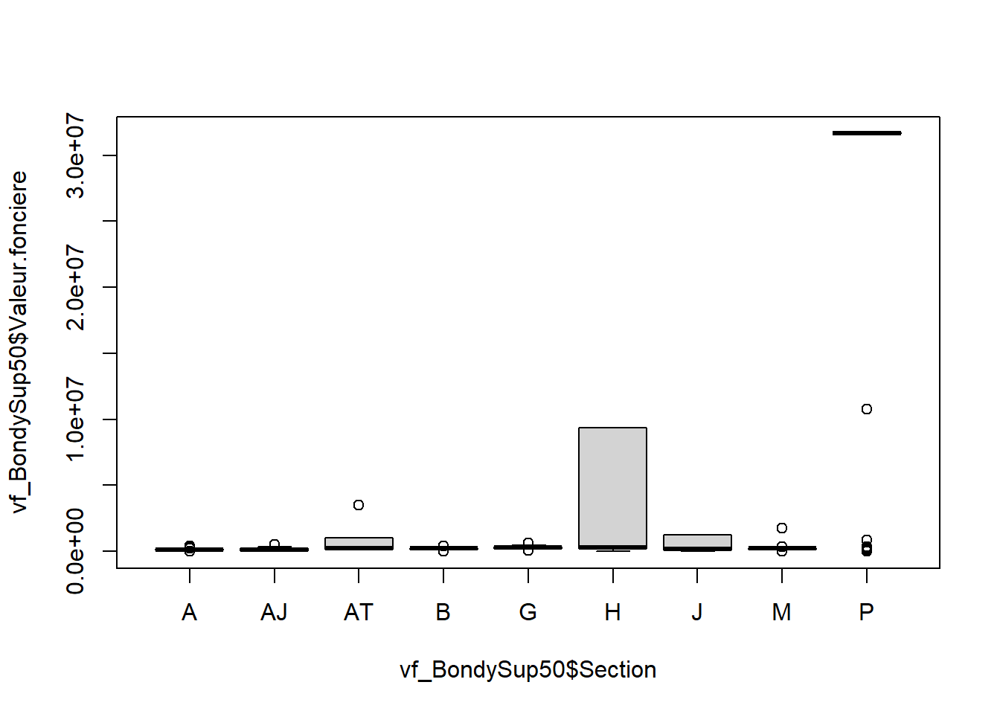
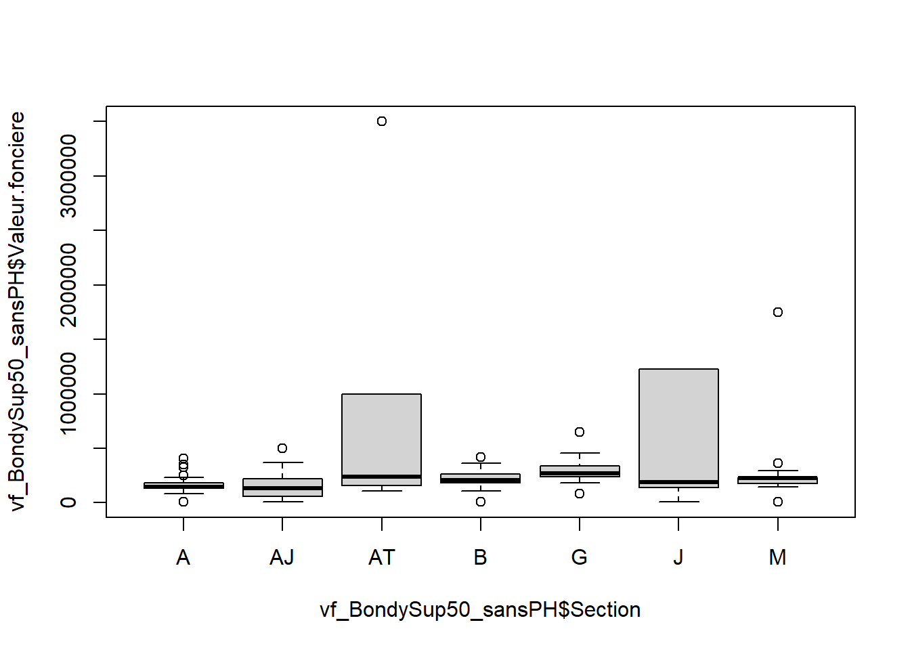
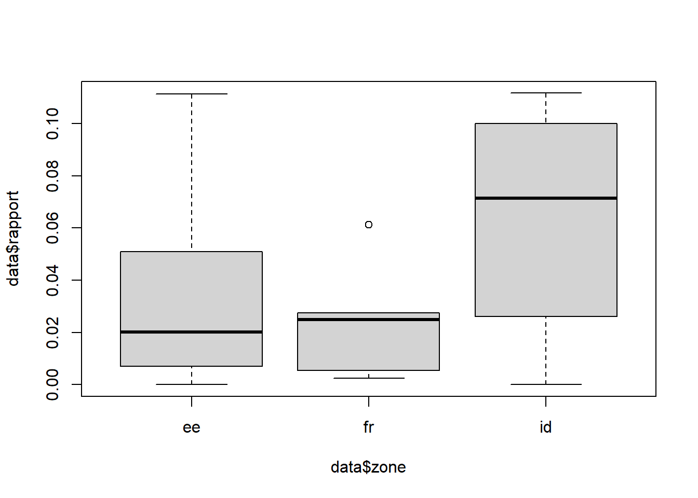
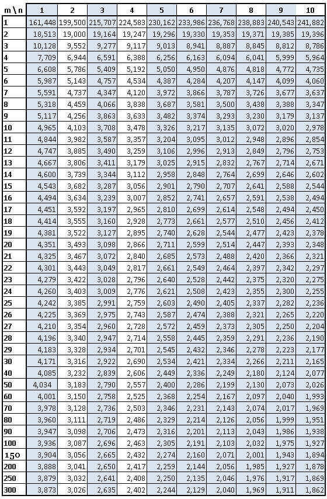

le khi2, la régression, et la variance
démarche générale
Avec le khi2, on a vu surtout le test et sa significativité.
Avec la régression, on a abordé uniquement le coefficient de corrélation sans montrer le test.
Avec la variance, nous allons aborder test, significativité et intensité.
xls ou csv
libre office ou R
Suite à l’examen, on a 3 séries de données sous les iris (logement), les carreaux (revenus), et les parcelles cadastrales (fonciers)
On va tester s’il y a une répartition spatiale spécifique des éléments pour chacune de ces données.
Nous allons d’abord examiner les valeurs foncières.
Notre exemple reste Bondy.
La variance est en effet très souvent utilisée en géographie pour tester des groupements spatiaux.
Nous allons étudier la relation entre une variable quantitative et une donnée géographique .
R va nous permettre de mettre en place la donnée d’exemple.
Lire les fichiers, notament celui où est Bondy, le 93 Extraire la donnée quantitative la plus représentative Enregistrer ce rapport dans un fichier
opérateur d’assignation
les accolades
la complétion avec tabulation
Parcours du script et exercice moodle pour voir si c’est compris.
# lecture du fichier. Quelle remarque faire ?
vf <- read.csv2("data/examen/vf/93_vfEXAMEN.csv", fileEncoding = "UTF-8")
# extraction de Bondy
vf_Bondy <- vf [ vf$cog == '93010',]
str(vf_Bondy)## 'data.frame': 1901 obs. of 45 variables:
## $ X : int 4308273 4308274 4308275 4308347 4308348 4308349 4308371 4308372 4309014 4309015 ...
## $ cog : int 93010 93010 93010 93010 93010 93010 93010 93010 93010 93010 ...
## $ Identifiant.de.document : logi NA NA NA NA NA NA ...
## $ Reference.document : logi NA NA NA NA NA NA ...
## $ X1.Articles.CGI : logi NA NA NA NA NA NA ...
## $ X2.Articles.CGI : logi NA NA NA NA NA NA ...
## $ X3.Articles.CGI : logi NA NA NA NA NA NA ...
## $ X4.Articles.CGI : logi NA NA NA NA NA NA ...
## $ X5.Articles.CGI : logi NA NA NA NA NA NA ...
## $ No.disposition : int 1 1 1 1 1 1 1 1 1 1 ...
## $ Date.mutation : chr "03/01/2022" "03/01/2022" "03/01/2022" "12/01/2022" ...
## $ Nature.mutation : chr "Vente" "Vente" "Vente" "Vente" ...
## $ Valeur.fonciere : num 188000 188000 188000 135000 135000 ...
## $ No.voie : int 139 139 139 2 2 2 90 90 11 11 ...
## $ B.T.Q : chr "" "" "" "" ...
## $ Type.de.voie : chr "AV" "AV" "AV" "ALL" ...
## $ Code.voie : chr "1430" "1430" "1430" "0765" ...
## $ Voie : chr "CARNOT" "CARNOT" "CARNOT" "DES BOULEAUX" ...
## $ Code.postal : int 93140 93140 93140 93140 93140 93140 93140 93140 93140 93140 ...
## $ Commune : chr "BONDY" "BONDY" "BONDY" "BONDY" ...
## $ Code.departement : int 93 93 93 93 93 93 93 93 93 93 ...
## $ Code.commune : int 10 10 10 10 10 10 10 10 10 10 ...
## $ Prefixe.de.section : logi NA NA NA NA NA NA ...
## $ Section : chr "AS" "AS" "AS" "A" ...
## $ No.plan : int 167 167 167 224 224 224 136 136 21 21 ...
## $ No.Volume : int NA NA NA NA NA NA NA NA NA NA ...
## $ X1er.lot : int 19 19 8 1158 1660 1158 28 19 NA NA ...
## $ Surface.Carrez.du.1er.lot : num NA NA NA 66.3 NA ...
## $ X2eme.lot : int 26 26 NA 1160 NA 1160 NA NA NA NA ...
## $ Surface.Carrez.du.2eme.lot: num 54.8 54.8 NA NA NA ...
## $ X3eme.lot : int NA NA NA NA NA NA NA NA NA NA ...
## $ Surface.Carrez.du.3eme.lot: num NA NA NA NA NA NA NA NA NA NA ...
## $ X4eme.lot : int NA NA NA NA NA NA NA NA NA NA ...
## $ Surface.Carrez.du.4eme.lot: num NA NA NA NA NA NA NA NA NA NA ...
## $ X5eme.lot : int NA NA NA NA NA NA NA NA NA NA ...
## $ Surface.Carrez.du.5eme.lot: logi NA NA NA NA NA NA ...
## $ Nombre.de.lots : int 2 2 1 2 1 2 1 1 0 0 ...
## $ Code.type.local : int 2 3 3 3 3 2 3 2 2 2 ...
## $ Type.local : chr "Appartement" "Dépendance" "Dépendance" "Dépendance" ...
## $ Identifiant.local : logi NA NA NA NA NA NA ...
## $ Surface.reelle.bati : int 54 0 0 0 0 66 0 76 29 17 ...
## $ Nombre.pieces.principales : int 3 0 0 0 0 4 0 4 2 1 ...
## $ Nature.culture : chr "" "" "" "" ...
## $ Nature.culture.speciale : chr "" "" "" "" ...
## $ Surface.terrain : int NA NA NA NA NA NA NA NA 993 993 ...# on ne conserve que la valeur foncière
vf_Bondy <- vf_Bondy [, c("Section","Valeur.fonciere")]
# liste des sections
unique(vf_Bondy$Section)## [1] "AS" "A" "AI" "V" "M" "AT" "Y" "AG" "AX" "BE" "H" "P" "X" "AN" "AZ"
## [16] "AY" "AO" "B" "G" "AK" "J" "AE" "Q" "AJ" "F" "AV" "AD" "L" "AR" "S"
## [31] "BG" "AQ" "E" "BF" "O" "AH" "AL" "N" "BD" "AC" "R" "BH" "AP" "AU" "BC"
## [46] "AB" "AM" "D" "U" "Z" "T" "K"##
## A AB AC AD AE AG AH AI AJ AK AL AM AN AO AP AQ AR AS AT AU
## 72 1 17 35 49 10 42 37 64 24 14 11 33 13 11 33 31 34 78 38
## AV AX AY AZ B BC BD BE BF BG BH D E F G H J K L M
## 31 16 5 33 109 4 7 9 11 14 8 9 9 11 52 275 97 1 17 53
## N O P Q R S T U V X Y Z
## 13 14 304 41 1 21 8 5 13 17 45 1La boite à moustaches permet de comparer rapidement des distributions. Les moustaches montrent les 1ers et 9e déciles. Les limites des boites correspondent au 1e et 3e quartile Le trait indique la médiane. Les valeurs aberrantes sont les points isolés.
Il s’agit d’obtenir un graphique lisible, pour cela, on filtre la donnée en fonction des graphiques obtenus.

# Trop de sections, on va prendre uniquement les sections où il y a beaucoup de données.
ind <- which((table(vf_Bondy$Section) > 63))
sectionSup63 <- names(ind)
vf_BondySup63 <- vf_Bondy [vf_Bondy$Section %in% sectionSup63,]
boxplot(vf_BondySup63$Valeur.fonciere~vf_BondySup63$Section)
# la section P et H paraîssent des cas à part
vf_BondySup63_sansPH <- vf_BondySup63 [!(vf_BondySup63$Section %in% c('P','H')),]
boxplot(vf_BondySup63_sansPH$Valeur.fonciere~vf_BondySup63_sansPH$Section)
# avec quelques options pour faire plus joli
# on décide de diviser la valeur foncière par 100 000 afin d'avoir moins de zéros.
vf_BondySup63_sansPH$Valeur.fonciere <- vf_BondySup63_sansPH$Valeur.fonciere / 100000
boxplot(vf_BondySup63_sansPH$Valeur.fonciere~vf_BondySup63_sansPH$Section, xlab ="Section", ylab="montant valeur foncière (centaines de milliers)",
col=rainbow(8))
# Affichage des moyennes sur les boites à moustache
moyenne <- tapply(vf_BondySup63_sansPH$Valeur.fonciere, vf_BondySup63_sansPH$Section, mean)
points(moyenne, pch = 8, col="black", cex = 2)
Ce graphique permet de comparer 5 sections. Les variations entre les groupes sont-elles plus importantes que les variations au sein des groupes eux-mêmes ? A priori, dans les sections AT et AJ, l’amplitude est très étendue et la distribution est très asymétrique (la médiane est quasiment au plancher de la boite). Beaucoup de petites ventes, et quelques grosses ventes entre 50 M et 150 000. Les sections A, AJ et B ont une distribution symétrique et une amplitude beaucoup plus faible.
Il existe une valeur aberrante dans la section AT
hist(vf_BondySup63_sansPH$Valeur.fonciere [vf_BondySup63_sansPH$Section == "AT"],
main = "Distribution montant valeur foncière section AT", xlab = "montant (centaines de milliers)", ylab = "effectif")
La section AT a une très grosse vente.
Pour mémoire, la variance est le carré de la moyenne des écarts à la moyenne.
Dans le tableur, nous aurions fait une série de tableaux de calcul autour des écarts à la moyennes (en mettant des carrés). Dans r, c’est une formule var.
## [1] 25.05244# Variance pour chaque zone, on utilise un tapply
tapply(vf_BondySup63_sansPH$Valeur.fonciere, vf_BondySup63_sansPH$Section,var)## A AJ AT B J
## 0.3905172 1.3616794 69.7387307 0.3664222 28.8179806# verif pour la section AT
sel <- vf_Bondy[vf_Bondy == 'AT',c("Section", "Valeur.fonciere")]
sel$Valeur.fonciere <- sel$Valeur.fonciere /100000
mean((sel$Valeur.fonciere - mean(sel$Valeur.fonciere))^2)## [1] 68.84464## [1] 69.73873Le résultat est légèrement différent, car le logiciel pondère la variance en soustrayant 1 à l’effectif. Plus la série est grande, moins cela a d’importance.
La variance est une quantité qui se décompose en :
les variations à l’intérieur de chaque groupe (variation intra groupe)
les variations entre les groupes (variation inter groupe)
La variation totale est la somme des deux. La significativité et l’intensité sont calculées avec ces trois grandeurs.
significativité = rapport inter / intra
intensité = rapport inter / total
ANalyse Ordinaire de la VAriance
Sous R, il suffit de lancer une formule.
# on renomme la donnée avec un nom plus simple et on divise par 100000
data <- vf_BondySup63_sansPH
# transformation en variable de catégorie
data$Section <- as.factor(data$Section)
modele <- lm (Valeur.fonciere ~ Section, data = data)
anova(modele)## Analysis of Variance Table
##
## Response: Valeur.fonciere
## Df Sum Sq Mean Sq F value Pr(>F)
## Section 4 2207.5 551.87 27.628 < 2.2e-16 ***
## Residuals 415 8289.5 19.97
## ---
## Signif. codes: 0 '***' 0.001 '**' 0.01 '*' 0.05 '.' 0.1 ' ' 1Sum Sq = la somme des carrés des écarts (SCE)
Mean Sq = la moyenne des carrés des écarts, c’est la variance.
La première ligne c’est pour la variation inter-groupe , la deuxième c’est pour l’intérieur des groupes (l’intra)
Que dire ce ces chiffres ?
Comme pour le khi2, on peut faire un test et calculer l’intensité.
F value = Test de Fisher, c’est le test de significativité pour la variance.
Le test est mesuré par le rapport entre la variation intergroupe et la variation intragroupe (avec les degrés de liberté).
Si ce rapport est élevé, cela signifie que la variation intergroupe est importante relativement à la variation intra, donc qu’il y a une vraie différence entre les écarts à la moyenne des groupes.
Concernant les degré de liberté pour les données intra, on prend tous les effectifs et on enlève le nombre de sections (cf les 2 chiffres df)
ICi 420 - 5, df1 = 4, df2 = 415
Comme pour le khi2, on compare à un test obtenu par le hasard (donc une table).
 F calculé
Le F théorique est inférieur au F calculé pour un risque de 5 %
Il n’y a donc pas indépendance entre les sections et la distribution du montant de la valeur foncière.
Le chiffre le plus rapide à analyser, c’est la p-value, il indique la taille de la différence entre les moyennes des 5 sections.
Plus il est petit, plus il y a de différence, plus il est gros, plus les écarts aux moyennes se ressemblent et donc l’hypothèse d’indépendance peut être rejetée.
C’est la même logique que pour le khi2 (cf exemple khi2 dans l’introduction aux bivariées).
Dans notre cas, la pvalue indique un risque très faible Concrètement, il faudrait aller chercher la table du risque à % de Fisher.
## [1] 21.85585On a très peu chances de se tromper si on rejette l’indépendance, il faut donc la rejeter.
Les 5 sections correspondent à une répartition spécifique du montant de la valeur foncière.
On mesure quand même l’intensité, la proportion de la variation expliquée par les modalités dans la variation totale (entre 0 et 1)
variation intergroupe / variation totale
## [1] 0.9649737L’intensité est forte, plus de 96 % de la variation est expliquée par la structure spatiale.
Il s’agit d’observer s’il y a une variation entre les groupes en terme de notation. L’hypothèse est que le groupe 2 aura des meilleurs notes car le cours du groupe 1 sert de brouillon, et le groupe 3 digère.
Il existe des différences entre les groupes, la variation des notes au sein de chaque groupe est différente. Seul le 3e groupe a une distribution symétrique.
Le premier groupe a des notes de faible amplitudes mais avec 3 notes très fortes. Et le 2e groupe a beaucoup de notes basses.
La variance entre les groupes risque donc d’être plus importante que la variance intragroupe.
Le chiffre de la p-value (0.039) est bas. Donc la relation est significative. H0 est rejetée avec un risque de 4 %.
L’intensité est forte, plus de 75 % de la variation est expliquée par la structure en groupe.
L5GEABIM Analyses bivariées et multivariées